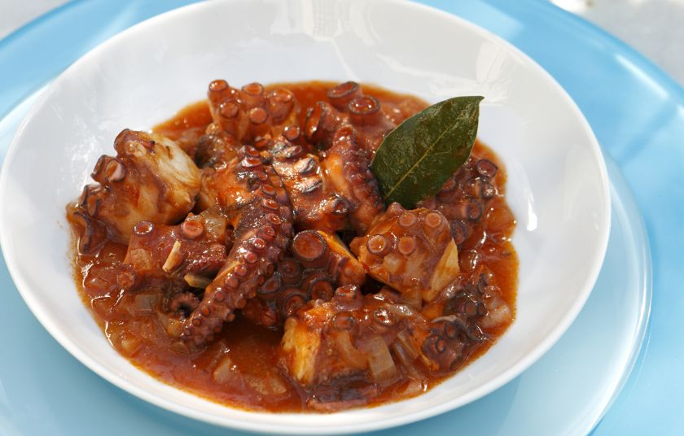

Συνταγές
 Συνταγές μαγειρικής για καλό φαγητό, νόστιμες πίτες και ωραία γλυκά! Συνταγές Toggle navigation Toggle search Νεα Συνταγη Γλωσσάρι Blog ΕργαλειαΑγαπάμε το καλό φαγητό, τη μαγειρική της μαμάς, και μοιραζόμαστε τις πιο σούπερ και ευκολες συνταγές μας για φαγητά και γλυκά!
Διαφορετική σαλάτα με ροκφόρ, καρύδια και αχλάδι
Φριτάτα με σπανάκι και μοτσαρέλα, η Ιταλική συνταγή!
Γίγαντες στο φούρνο, με τη συνταγή της γιαγιάς!
Συνταγές που αξίζουν
Ιταλική ΚουζίναΦριτάτα με σπανάκι και μοτσαρέλα, η Ιταλική συνταγή!
Ελληνική ΚουζίναΓίγαντες στο φούρνο, με τη συνταγή της γιαγιάς!
Ελληνική ΚουζίναΤαραμοσαλάτα
Ελληνική ΚουζίναΦάβα Σαντορίνης, η κλασική εύκολη συνταγή
Ελληνική ΚουζίναΣκορδαλιά με πατάτα, η αυθεντική και αξεπέραστη!
Μεσογειακή ΚουζίναΕύκολοι ρεβιθοκεφτέδες
Ελληνική ΚουζίναΤαραμοσαλάτα με πατάτα
Ελληνική ΚουζίναΧαλβάς πολίτικος, η κλασική συνταγή!
Ελληνική ΚουζίναΝτολμαδάκια γιαλαντζί, με την παραδοσιακή συνταγή
Ελληνική ΚουζίναΛαγάνα εύκολη
Ελληνική ΚουζίναΑρωματικές φαρφάλες με κοτόπουλο και μανιτάρια
Ελληνική ΚουζίναΣουβλάκια με ρύζι, σπιτικά και νόστιμα!
Διαφορετική σαλάτα με ροκφόρ, καρύδια και αχλάδιΕξερευνήστε τις συνταγές μας
Χριστουγεννιάτικες Συνταγές
Συνταγές για παιδιά
Συνταγές με κοτόπουλο
Νηστίσιμα φαγητά
Παραδοσιακές συνταγές
Συνταγές με θαλασσινά
Συνταγές με κρέας
Συνταγές με ζυμαρικά
Συνταγες για σούπες
Συνταγές για σαλάτες
Συνταγές για κέικ
Συνταγές για ορεκτικά
Συνταγές για γλυκά
Συνταγές διαίτης
Εύκολες συνταγές
Συνταγες για μπουφε
Δημοφιλείς συνταγές
Ψωμί, χωρίς ζύμωμα, στη γάστρα
Tαλιατέλες Σισιλιέν, η ιταλική συνταγή για καλοφαγάδες
Γίγαντες στο φούρνο, με τη συνταγή της γιαγιάς!
Ατζέμ πιλάφι, η πολίτικη συνταγή!
Λαγάνα εύκολη
Αρνί στη σούβλα, βήμα προς βήμα
Πανεύκολα pancakes με τρία υλικά
Η σκορδομακαρονάδα που θα σας ξετρελάνει!
Καλαμάρια γεμιστά με ρύζι, ψημένα στα φούρνο
Φασολάδα, η διάσημη σούπα της γιαγιάς
Τραχανάς σούπα με φέτα
Φάβα Σαντορίνης, η κλασική εύκολη συνταγή
Ρατατούι στο φούρνο, η αυθεντική πεντανόστιμη συνταγή για ένα πιάτο οπτασία χρωμάτων
Το πιο νόστιμο σπανακόρυζο που έχετε φάει!
Οι καλύτερες χυλοπίτες με πιπεριές και λουκάνικα
Kανελόνια με κιμά, αγαπημένη συνταγή!
Πάστα ελιάς απαλή
Σκορδαλιά με πατάτα, η αυθεντική και αξεπέραστη!
Ντολμαδάκια γιαλαντζί, με την παραδοσιακή συνταγή
Φριτάτα με σπανάκι και μοτσαρέλα, η Ιταλική συνταγή!
Περισσότερες Δημοφιλείς ΣυνταγέςΣυνταγες απο σπιτι
Αγαπάμε το καλό φαγητό, τη μαγειρική της μαμάς, τις πίτες και τα γλυκά της γιαγιάς και μοιραζόμαστε τις πιο σούπερ και ευκολες συνταγες μαγειρικης και ζαχαροπλαστικης!
Ακολουθήστε μας!
Διαβάστε
Τρόπος ζωής και φαγητό Η ιστορία της πίτσας: Πως πήρε το όνομά της και τις διάφορες μορφές της Baked Feta Pasta: Πως μια μακαρονάδα έκανε τη φέτα viral στο εξωτερικό Οι αλλαγές στη συμπεριφορά μας που έφερε η νόσος COVIDΕλα στην παρέα μας
Αν έχεις ήδη λογαριασμό, κάνε
Σύνδεση
Αν δεν έχεις ήδη λογαριασμό, κάνε
Εγγραφή
Νέες συνταγές
Διαφορετική σαλάτα με ροκφόρ, καρύδια και αχλάδι Οι καλύτερες χυλοπίτες με πιπεριές και λουκάνικα Φριτάτα με σπανάκι και μοτσαρέλα, η Ιταλική συνταγή! Εύκολη ομελέτα με σύγκλινο Ψαρονέφρι γεμιστό με μπέικον Εύκολα τρουφάκια με κάστανο Η πιο νόστιμη μακαρονάδα του ψαρά! Ατομικά κρουασάν με καπνιστό ζαμπόν Αυγά βραστά γεμιστά με ζαμπόν Μπιφτέκια με σάλτσα μουστάρδας Ολες Οι ΣυνταγέςΟι Πιο Αγαπημένες Συνταγές
Γίγαντες στο φούρνο, με τη συνταγή της γιαγιάς! Ψωμί, χωρίς ζύμωμα, στη γάστρα Γιουβαρλάκια αυγολέμονο, τα αγαπημένα! Τραχανάς σούπα με φέτα Μπακαλιάρος πλακί στο φούρνο (μπουρδέτο) Δίαιτα της NASA: Χάστε μέχρι 10 κιλά σε 2 εβδομάδες! Ρολό Κοτόπουλο (γεμιστό) Θρεπτική κοτόσουπα, ιδανική για το κρυολόγημα Σκορδαλιά με πατάτα, η αυθεντική και αξεπέραστη! Σπετζοφάι (βολιώτικο) Περισσότερες Δημοφιλείς ΣυνταγέςΠαραμύθια
Μίλα μου! Άσπρα καράβια τα όνειρά μας...! Το Μαγικό Κουτί Το παζλ Η άμμος Η βατραχίνα Οι νότες που πήγαν βόλτα Ο Παραμυθούλης ΠερισσότεραΣυνταγές Μαγειρικής για καλό φαγητό, νόστιμες πίτες και ωραία γλυκά!
Ακολουθήστε μας
Δείτε
Χριστουγεννιάτικες συνταγές Όλες οι συνταγές μας Συνταγές ανά κατηγορία Συνταγές με ό,τι υλικά έχεις! Συνταγές που αγαπήσαμε Δημοφιλείς συνταγές Γλωσσάρι Συνταγών Δοσολογίες υλικών ΘερμιδομετρητήςΣυνταγές
Ποιοι είμαστε Επικοινωνία Ιστολόγιο Πολιτική Cookies Πολιτική Απορρήτου Χάρτης ΙστοτόπουΧρήσιμα
Τupperware προσφορές Καιρός Ονειροκρίτης Ειδήσεις και gossip Ζώδια Παραμύθια Αγγελίες Ασφάλεια Αυτοκινήτου© 2020 - Συνταγες - Γιατί όλοι μπορούμε να μαγειρεύουμε καλό φαγητό και να φτιάχνουμε ωραία γλυκά!
Powered by Linux - Created with ♥ by WebZein